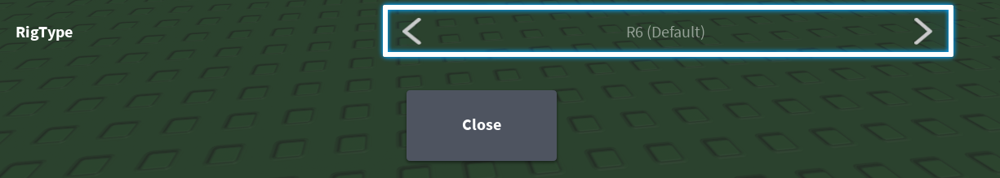

R15/R6 swap can be done 2 ways, UI navigation or mouse movement
I prefer mouse movement over UI navigation because its more stable
but I will show 2 ways to do this using these 2 methods
MOUSE MOVEMENT METHOD
can be done using 2 MC and 1 W
I hold my cursor over the gear icon then press CTRL ALT M to get its coordinates
I copy the coordinates and use that for MC
for me it turns out like this:
this script would press the gear icon
now whats left is to make it press rigtype setting
so again I hold my cursor over the button that needs to be clicked and I press CTRL ALT M to get its coordinates
I also add a W500 to wait 500ms before clicking it
so for me it turns out like this:
MC moves mouse and clicks, W is wait
what this script now does is that it clicks the gear icon, waits 500ms then it presses rigtype setting
this script now does R15/R6 swap
UI NAVIGATION METHOD
UI navigation key varies across keyboards
its not the same key for everyone
so we create a custom variable which the UI navigation key is stored in
we do this so that others who use our script can easily change it if their UI navigation key is different
UI navigation key on the english keyboard layout is "\"" so I will use it in this example
we first create a custom variable in which we assign the UI navigation key to:
after this I toggle UI navigation and see where it starts
I see that it starts out here:
for some stupid ass reason theres not always the same amount of UI boxes there in LPI as of now
so what we do is that we move it to another point where we will be sure it stays at always
regardless of if theres more or less UI boxes added
so we do this to start out at here:
K‡UI‡DDDDDDDDDDDDDDDDD
now I can see that I only need to press A one time to end up at gear icon so we do this:
K‡UI‡DDDDDDDDDDDDDDDDD
KA {ENTER}
K is key input, {ENTER} is a special key
what this script does is that if first turns on UI navigation then it goes over to the gear icon and presses enter
after this I dont turn off UI navigation
but I instead figure out how I am supposed to press the WASD keys to end up at rig type setting
I notice that if I press S then A after this I end up at the CLOSE button:
whats left is to press W to go up to rig type like this:
so the script now becomes:
K‡UI‡DDDDDDDDDDDDDDDDD
KA {ENTER} W500 KSAW {ENTER} K‡UI‡
W is wait
so what this script does is that it first turns on UI navigation then goes to gear icon
it presses gear icon then it waits 500ms then it goes to rigtype settings and presses it
then it turns off UI navigation and R15/R6 swap is done!